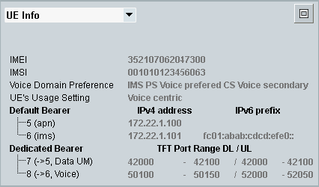

To display UE-related information for an attached UE, select "UE Info" in the field below the event log area.

International mobile equipment identity (IMEI) received from the UE. The IMEI is only known if NAS security is enabled.
Remote command:International mobile subscriber identity (IMSI) received from the UE.
Remote command:The voice domain preference received from the UE indicates whether the UE uses the CS domain or the IMS for voice calls.
CS domain means that a circuit-switched fallback is performed and the voice call is established via GERAN or UTRAN.
IMS means that the voice call is established as voice over IMS call, via E-UTRAN.
- "CS voice only"
- "IMS PS voice only"
- "CS voice preferred, IMS PS voice as secondary"
- "IMS PS voice preferred, CS voice as secondary"
The usage setting received from the UE determines the behavior of the UE, if voice services are not possible in the current E-UTRAN cell.
Example: The UE has the voice domain preference "IMS PS Voice only", but the cell does not offer IMS services.
"Voice centric" | The UE leaves the cell to ensure the support of voice services. It disables the E-UTRAN capability and performs a reselection to GERAN or UTRAN. |
"Data centric" | The UE stays in the cell even if voice services are not possible. |
List of all established default bearers, one line per bearer.
- Default bearer ID, composed as follows: <EPS default bearer ID> (<APN>)
Example: "5 (cmw500.rohde.schwarz.com)" means default bearer 5, with access point name "cmw500.rohde.schwarz.com" - IPv4 address assigned to the UE for this bearer
- IPv6 prefix assigned to the UE for this bearer
List of all established dedicated bearers, one line per bearer.
- Dedicated bearer ID, composed as follows:
<EPS dedicated bearer ID> (-> <EPS default bearer ID>, <profile>)
Example: "6 (->5, Voice)" means dedicated bearer 6, mapped to default bearer 5, using dedicated bearer profile "Voice"
For calls set up by the IMS, the <profile> indicates the call type ("IMS Voice" or "IMS Video") and the initial digits of the call ID. - TFT port range assigned to the dedicated bearer downlink / uplink
This information is not displayed for calls setup by the IMS.